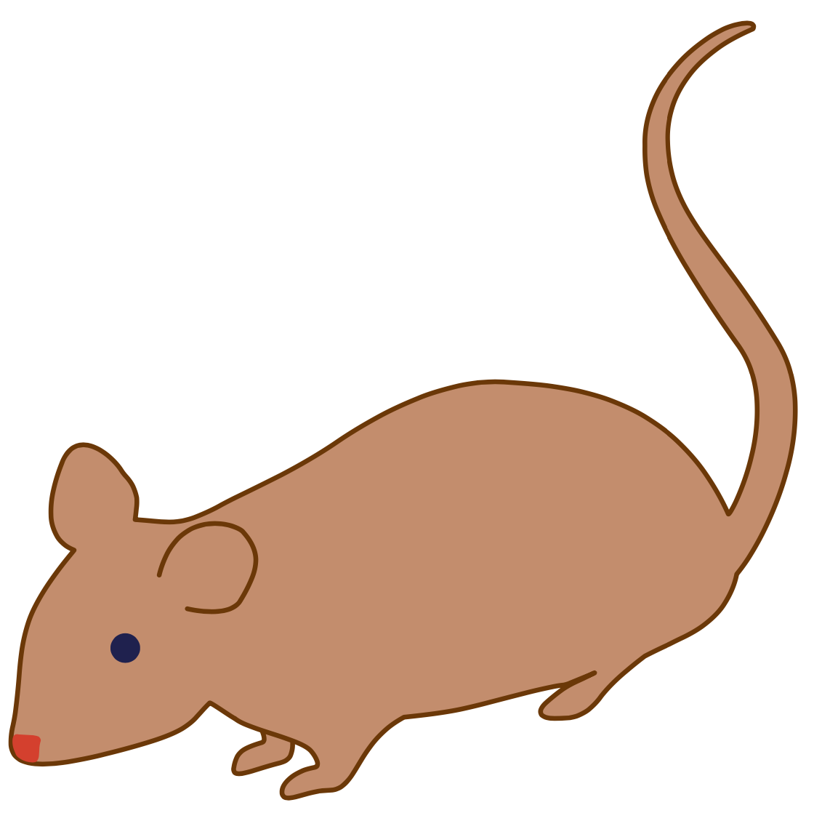
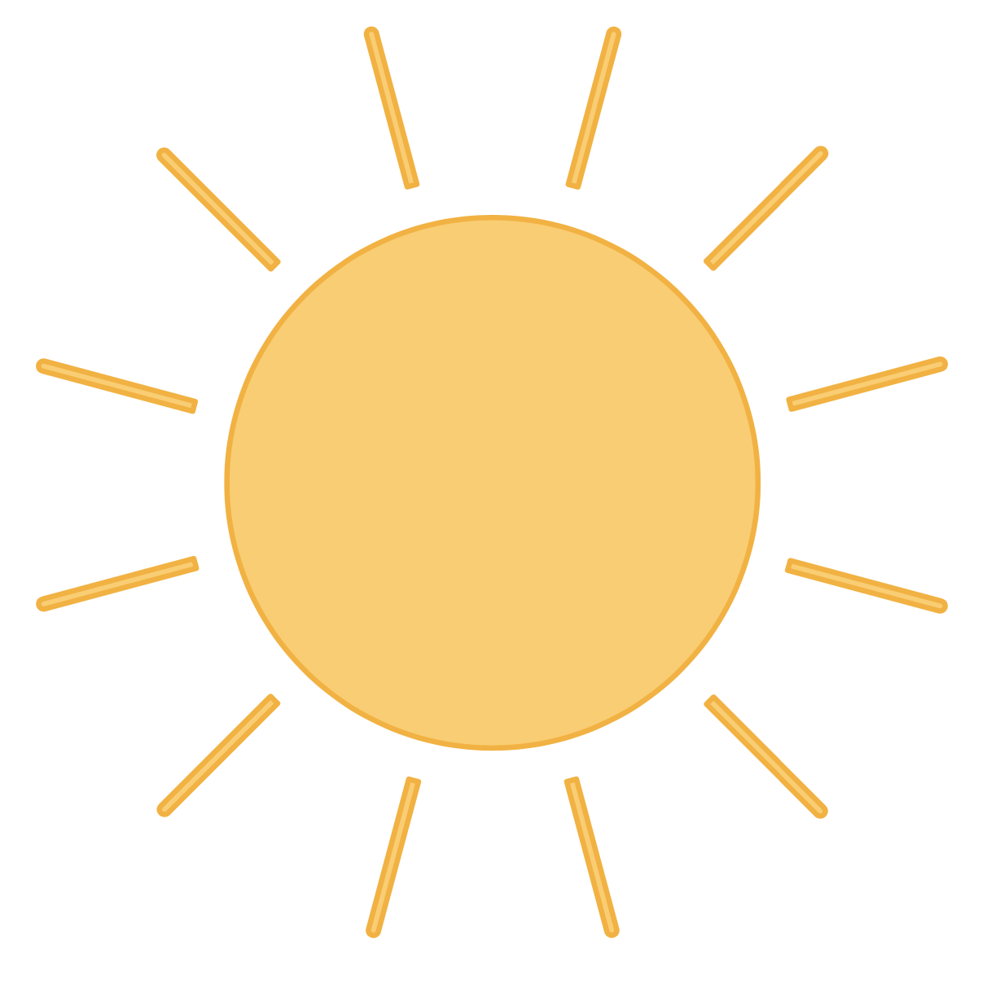
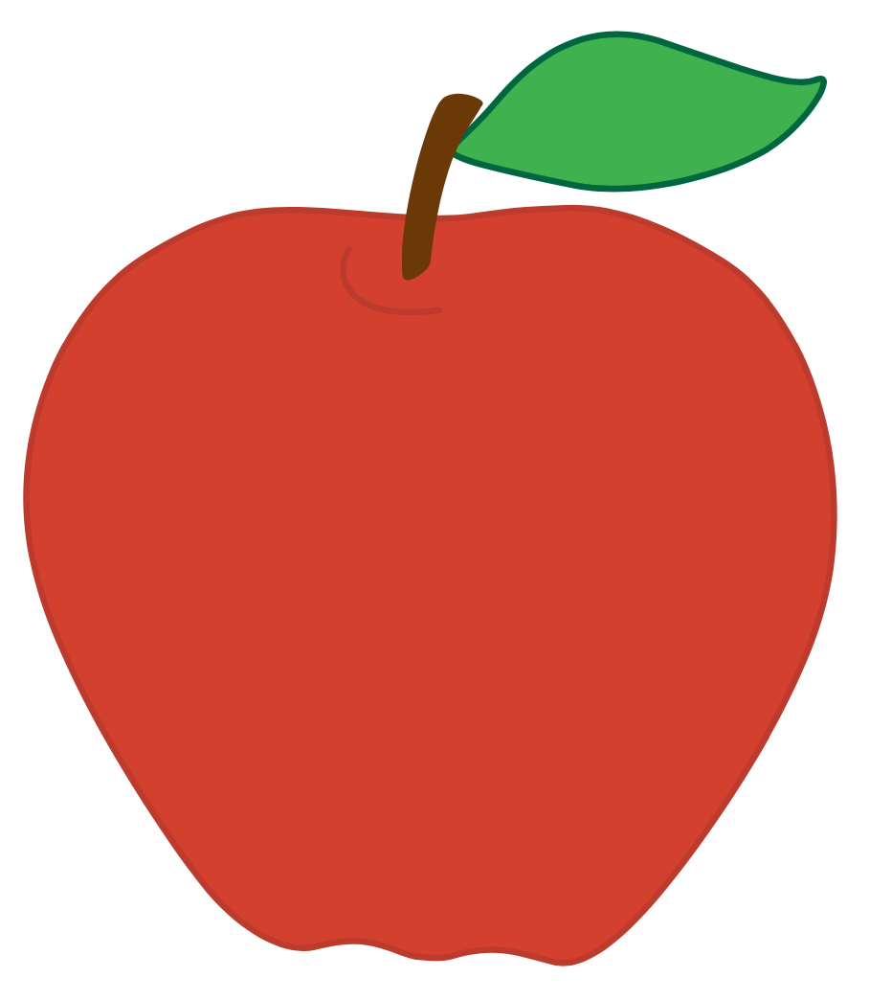
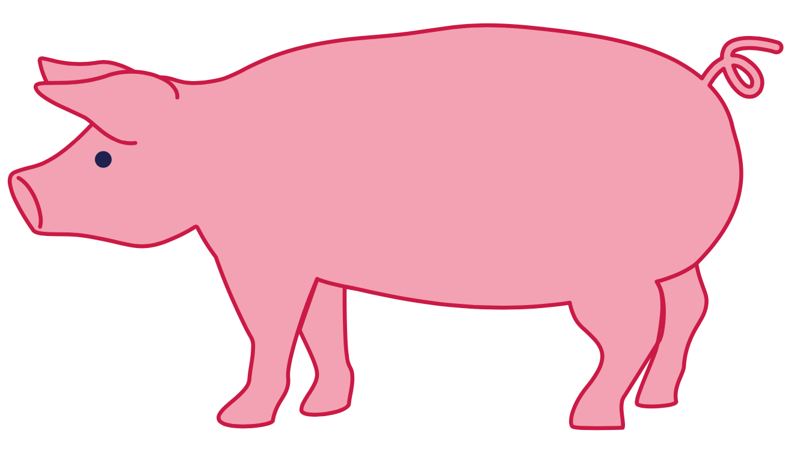
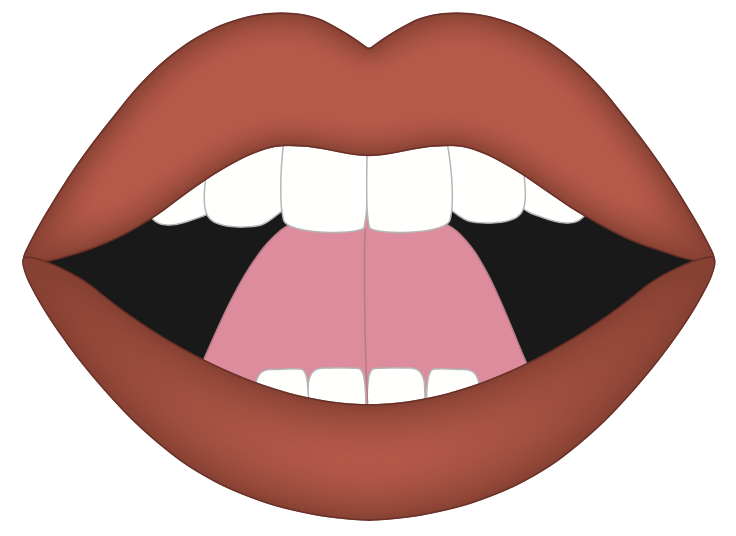
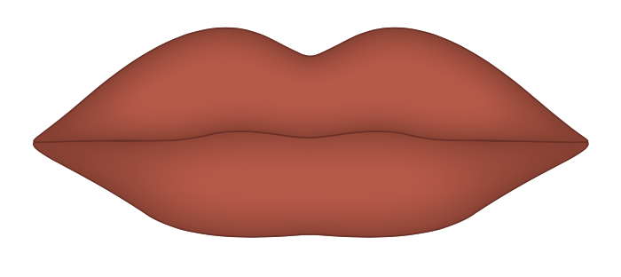
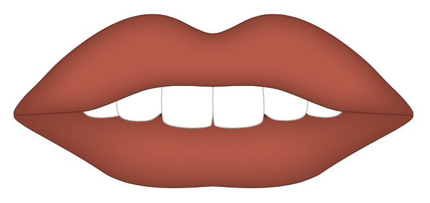
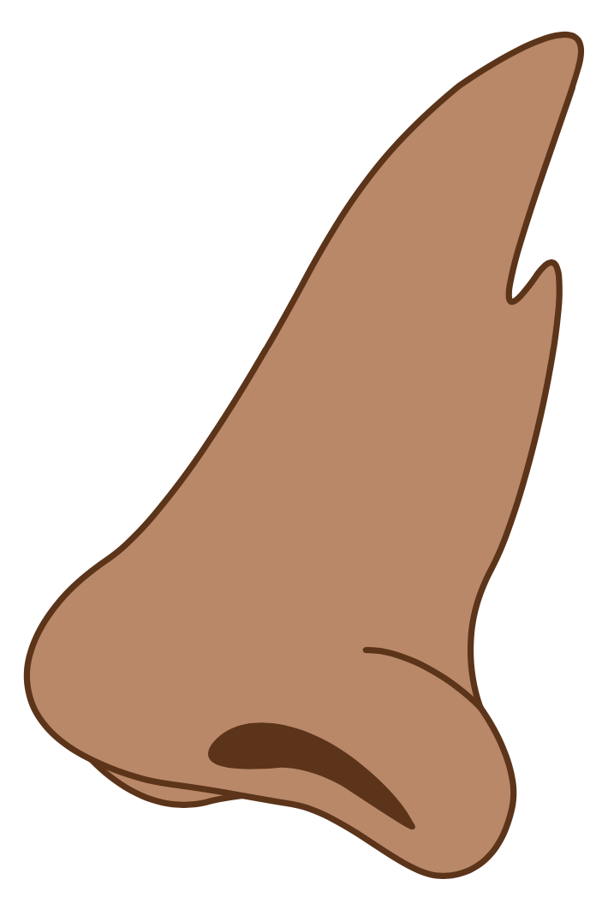
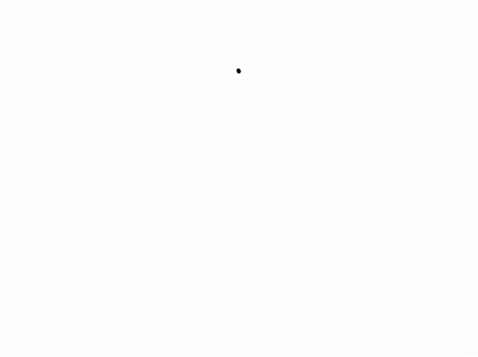
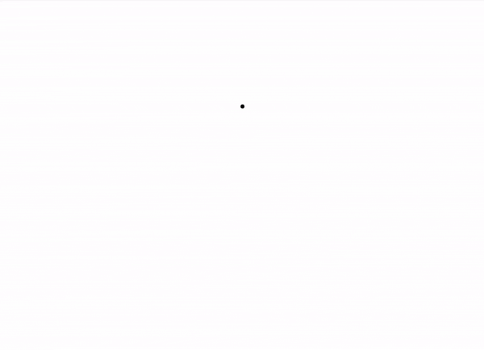

Getting Ready
Lesson A

ufliteracy.org


See UFLI Foundations Getting Ready lesson plans for sound wall activity.



Introduction: Sounds
/mmm/ (mouse)

/sss/ (sun)

/ăăă/ (apple)

/p/ (pig)




Voiced & Unvoiced Sounds


See UFLI Foundations Getting Ready lesson plans for alphabet knowledge and letter formation activity.

Let’s practice sky writing!
Let’s practice tracing!
Let’s practice circles!
Watch me write
Let’s write together

circle gif
Let’s practice curves!

half circle
smile
hump
Watch me write
Let’s write together

half circle gif
Watch me write
Let’s write together
smile gif
Watch me write
Let’s write together
hump gif


Insert brief reinforcement activity and/or transition to next part of reading block.